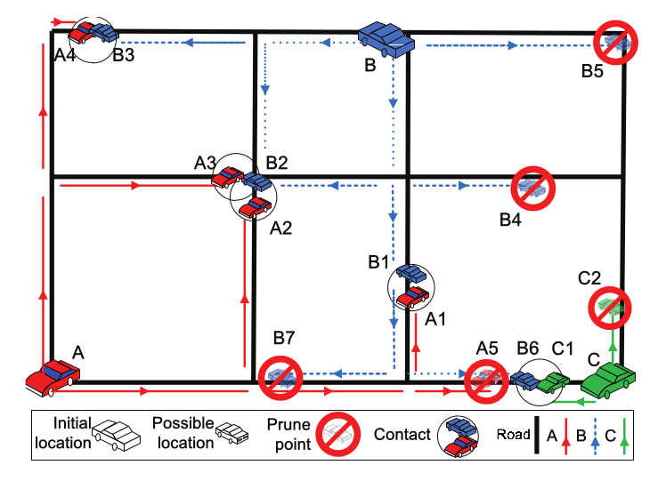

Trajectory Inference Problem

Abstract
This paper introduces a new security problem in which indi- viduals movement traces (in terms of accurate routes) can be inferred from just a series of mutual contact records and the map of the area in which they roam around. Such contact records may be obtained through the bluetooth communica- tion on mobile phones. We present an approach that solve the trace inference problem in reasonable time, and analyze some properties of the inference algorithm.
Members
Figures
